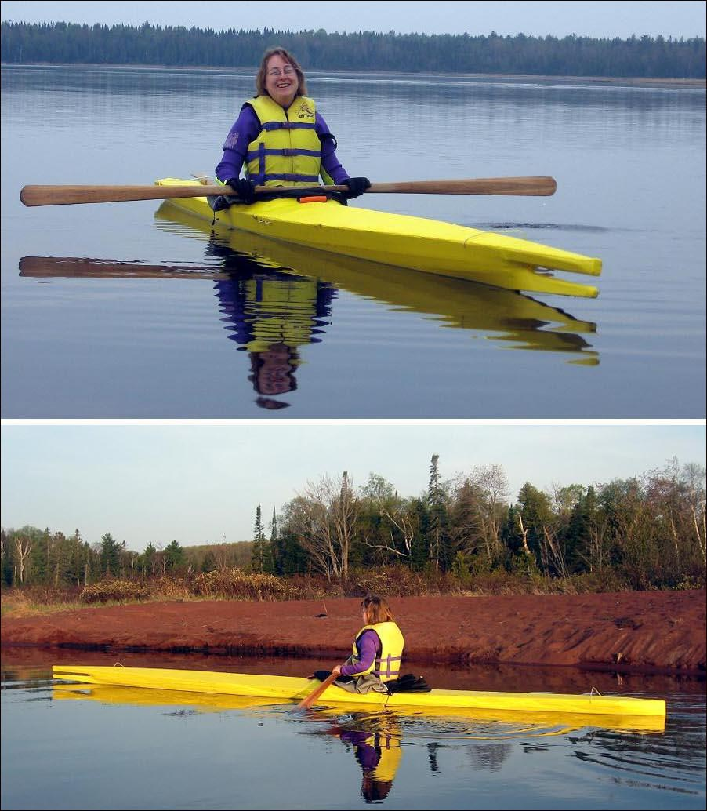

| Nikumi 19 by Jim Looker (US) | Menu Previous Page Next Page |
|

Darlene Looker from Michigan paddles her yellow Nikumi 19 (18'4" X 19" / 560cm X 48cm) on Lac La Belle . Jim built the wood frame Iqyax using 1/2" plywood cross sections, 3/4" cedar stringers, and a 12oz nylon skin coated with deck paint. Use the {Back} key to return.
|
|